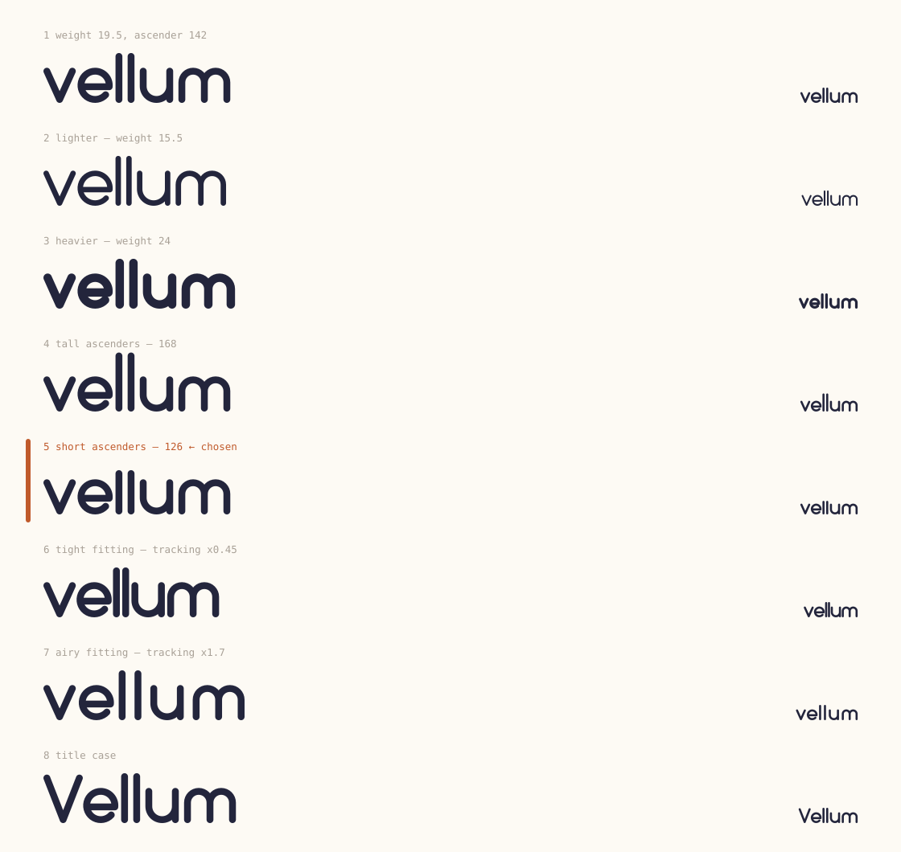
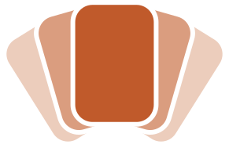
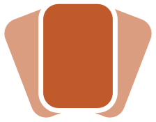

The fan survives the rename. Everything here is the mark decided on Aug 16 plus one change at a time — a wordmark drawn to sit beside it, and three readings of what putting the name into the icon actually means. Both decisions are made and are marked below; the candidates that lost stay in the tree, because a candidate nobody can look at again is a decision nobody can revisit.
Decision one · settled
Drawn, not set. Every curve is a true circular arc on a monolinear skeleton with round terminals — so there is no font file to ship, no licence to honour, and it renders identically in a browser that has never heard of us. The round terminals are not a style choice: the app's own type is SF Rounded and the cards carry a 52/252 corner radius, and a flat-cut wordmark beside that art reads as a different company's.
Build 5 — short ascenders — is the one, chosen Aug 17. The l's clear the x-height by 26 rather than 42, which keeps the word compact and level instead of letting two stems run away with it. It is the default in the generator now, so the lockups and the icon are the chosen build by construction rather than by anybody copying a number across.
The other seven are kept below for the record. Large on the left, at site-header size on the right — the right-hand column is where the differences actually mattered, because that is the size the word is read at nine times out of ten. Set lowercase, also settled: the marketing site's five title-case renderings are the ones that move.

Decision two · settled
All three keep the fan, all three keep the five entry kinds and their motifs, and none of
them redraws a card. What separated them is how literally the name enters the
picture. The front card says it — chosen Aug 17, and it is
vellum-icon-fan.svg. The two that lost keep descriptive filenames.
Geometry untouched to the decimal. The front card's entry title — a bar standing in for a line of type — becomes the line of type it was standing in for.
Costs: the word is gone by 87pt and is a smudge at 60. But it was always a smudge there: it replaced a bar that read as one. Watch: Apple's own guidance is that icons shouldn't carry words, and this is the one that does.
The shipped fan pivots at the top and splays downward. This one turns about a single pivot below the hand instead, the way a hand of cards actually opens, and the silhouette that falls out is a V.
Why it lost: the V is a shape you either see or you don't, and nobody who hasn't been told will. It stays because it is the only wordless option, and if the icon ever has to work without a name, this is where to start.
The photograph, the sheet and the lines come off the front card and a v takes the whole face of it.
Why it lost: the front card stops being an entry and becomes a badge — four cards say what this app is and the fifth says who makes it. It was the best small-size read of the three, which is the trade that was declined.
The kit
The logo's fan is not the icon's fan with the detail switched off — it is a different drawing of the same idea. No motifs, because a sixteen-bar waveform at 28px is a smudge; no kind tints, because four of the five are too pale to hold on cream. Depth is carried by one hue in three tones, which is also what lets it survive a single-colour print.
Every static file here is ground-independent. The gap between one card and the next is cut out of the card behind rather than painted in the background colour, so the same file is crisp on white, on cream and on anything between. Painting it cream was right for the app and wrong for the marketing site: on white it read as a warm halo round every card, and the mark looked soft-edged where it should look cut.


Below about 24px the five-card fan stops being five of anything, so there is a three-card cut for favicons and avatars. A mark that is honestly three cards beats one that is a smudge claiming to be five.
vellum-logo-mono.svg paints itself in currentColor, so an
<img> renders it ink and inline use takes whatever color the
page sets. Depth there cannot come from tone, because there is only one tone, and it cannot
come from translucency either — overlapping sheets compound and go muddy the moment the ground
is dark. It comes from a knockout: the gap between one card and the next is cut out of the card
behind, so the same file stays crisp on cream, on ink and on terracotta.
Hover it. The hand opens — outer cards last, on a 45ms stagger, so it reads as a fan
rather than a scale; closing has no stagger, so it snaps shut instead of unravelling.
Keyboard users get it on :focus-visible, and it respects
prefers-reduced-motion.
The copy-pasteable version is vellum-logo-hover.html —
generated, so it cannot drift from the artwork, and it carries the markup and CSS as blocks
to lift. It is shipped: this is the masthead and footer of the marketing site as of
Aug 18.
It asks nothing of the ground it sits on, which the site turns out to
need. That masthead is not white — it is color-mix(in srgb, var(--canvas) 88%,
transparent) over a backdrop filter, and the footer is a different cream again.
The mask moves with the cards, which is what makes this possible at all. A knockout is built from where the cards are, so left static it tears the instant the fan opens — the gap stays where the card used to be. The mask's shapes carry the same class and the same custom properties as the cards they mirror, so one rule moves both.
An earlier build dodged that by stroking the gaps in the page colour, and it would have been wrong on the site it was built for: the masthead is a translucent cream over a backdrop filter, so page content scrolls underneath and tints it continuously. No solid colour is right at every scroll position. Cutting the gap is the only answer that holds, so it had to learn to move.
Not answered here
decisions.md open item 15 was filed the same
night by another session saying the trademark search hasn't been run, P1 before
the App Store listing. One of those two needs to go, and only you know which.src/assets/icon.svg in Rascal-Marketing is a dog-eared page — a
visual pun on the previous name. Under Vellum the pun is dead, and until it's replaced
the app and the site ship two different marks under one name.api/ and 14 across 8 in
ios/ — including outbound email subject lines, a public HTML page title, and
an iOS string reading "Settings → Dogear → Notifications". decisions.md line
115 still records the app as Dogear. None of that is touched by this phase.rascal-icon-fan.svg is still what render-appicon.mjs
renders and still what's in the asset catalogue. Pointing that script at the new file and
re-rendering AppIcon-1024.png is an iOS-lane change and wasn't made here.